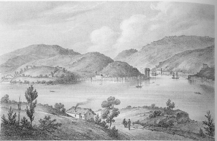
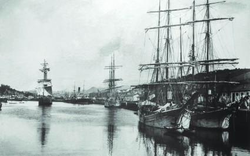

HISTORIA DE PASAIA
Desde un punto de vista histórico, la constitución de Pasaia como municipio es reciente, concretamente de 1805. Sin embargo, los núcleos urbanos de San Pedro y Donibane se crearon mucho antes, adaptándose a la peculiar configuración orográfica que diseñan las aguas de la bahía. Contamos con pruebas escritas de ello, concretamente las actas fundacionales de Donostia y Hondarribia.
Durante siglos la banda occidental de la bahía, San Juan, estuvo sometida a la jurisdicción de Hondarribia, mientras que la banda oriental, San Pedro, lo estaba de San Sebastián. El año 1770 San Juan se desanexionó de Hondarribia. Más tarde, en 1805, lo hace San Pedro de San Sebastián, uniéndose al ya independiente San Juan, y formando el municipio de Pasaia. No resulta difícil descubrir que tras estas decisiones existía el interés de ambas poblaciones por lograr unificar la competencia sobre el puerto, el deseo de una única jurisdicción sobre las actividades que se desarrollaban en el puerto, etc.
Más adelante, en la medida en que iban creándose y consolidándose nuevas infraestructuras alrededor de la actividad portuaria, como son la carretera nacional y el ferrocarril, se crea un nuevo distrito, Antxo, concretamente en 1890.
A estos tres distritos se une ya en el siglo XX un cuarto, Trintxerpe, que surge como consecuencia de la gran demanda de mano de obra inmigrante que se produjo en el sector pesquero.
A pesar de la transcendental importancia de la industria pesquera y naval, Pasaia se ha significado asimismo en estos últimos años por la actividad siderúrgica ubicada en el municipio. Sin embargo, la decadencia de estos sectores en las últimas décadas es evidente y Pasaia se ha convertido en un pueblo que pretende recuperar su lugar.
Todos estos factores han intervenido claramente en la configuración de Pasaia como uno de los municipios guipuzcoanos de mayor importancia, a lo que indudablemente ha contribuido también la belleza y la típica configuración de sus calles.